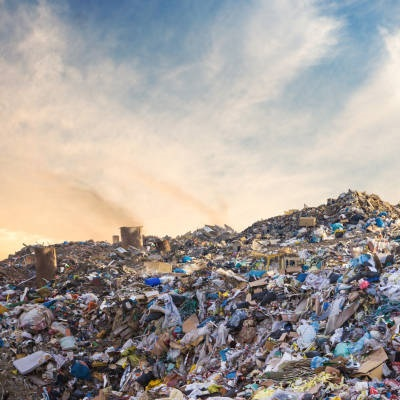
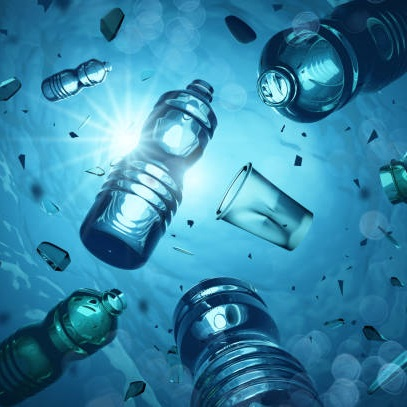

|
Aterros
|
 |
|
Aterros sanitários são lugares específicos em que são despejados resíduos que não
puderam ser reciclados, porém o processo de decomposição desses resíduos libera
substâncias tóxicas, como o chorume e metano, e se não tratados corretamente, há a
contaminação da área em volta, como o solo e a água (a partir dos lençóis freáticos).
Porém também há o lado positivo, pois é possível gerar energia a partir de certos
gases produzidos, além de convertê-los em fontes renováveis. |
|
Impactos aos oceanos |
 |
|
Uma grande consequência do descarte impróprio do lixo nos oceanos são os microplásticos,
pequenas partículas de plásticos variados, que se manifestam a partir de resíduos
expostos à radiação UV.
Pequenos organismos ingerem os microplásticos, eles são devorados por predadores como caranguejos, peixes e ostras, que são ingeridos por nós. A ciência
ainda está incerta sobre os efeitos do microplástico em nosso corpo, mas estudos
apontam que alguns produtos químicos adicionados ao plástico podem interferir com a
testosterona, e até elevar o risco de câncer.
|
|
Impactos à saúde humana |
|
|
Atualmente, apenas uma pequena porção do lixo produzido é reciclada ou incinerada, a
maioria ainda está espalhada pelo mundo. Em países desenvolvidos, boa parte do entulho
está sendo mantido em aterros, que são a melhor opção disponível, mas ainda demonstram
uma multidão de problemas ambientais.
Pequenos animais podem perfurar a película que separa o lixo do solo, jorrando líquido
tóxico que infiltra e contamina corpos d'água próximos.
Por outro lado, países em desenvolvimento não produzem lixo no mesmo nível que os países
mais ricos. Porém, esses países normalmente não tem um investimento adequado no setor de
coleta de lixo. A vasta maioria é jogado ao ar livre ou em rios próximos, contaminando
ainda mais o meio ambiente.
|
Bibliografia |
|
|